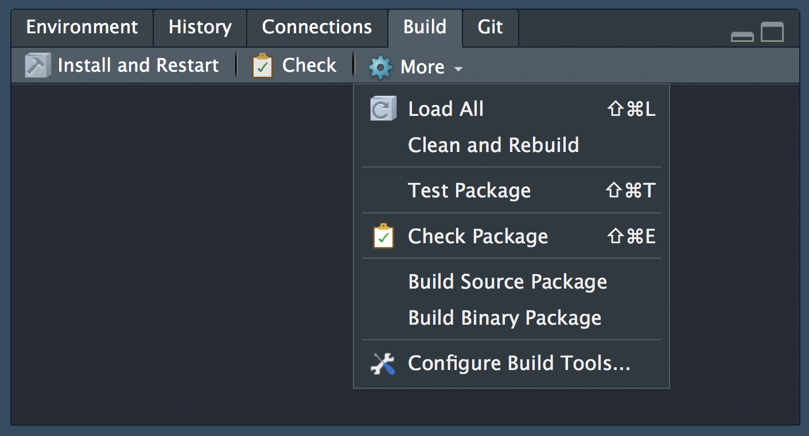
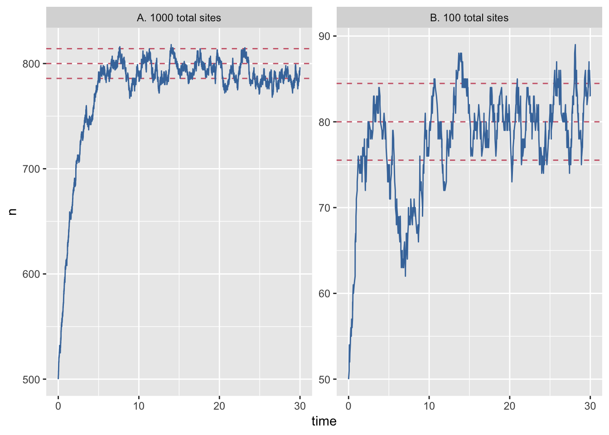

Last updated: 2019-05-03
Checks: 5 1
Knit directory: rrtools-repro-research/
This reproducible R Markdown analysis was created with workflowr (version 1.3.0). The Checks tab describes the reproducibility checks that were applied when the results were created. The Past versions tab lists the development history.
The R Markdown is ignored by Git. To know which version of the R Markdown file created these results, you’ll want to first commit it to the Git repo. If you’re still working on the analysis, you can ignore this warning. When you’re finished, you can run wflow_publish to commit the R Markdown file and build the HTML.
Great job! The global environment was empty. Objects defined in the global environment can affect the analysis in your R Markdown file in unknown ways. For reproduciblity it’s best to always run the code in an empty environment.
The command set.seed(20181015) was run prior to running the code in the R Markdown file. Setting a seed ensures that any results that rely on randomness, e.g. subsampling or permutations, are reproducible.
Great job! Recording the operating system, R version, and package versions is critical for reproducibility.
Nice! There were no cached chunks for this analysis, so you can be confident that you successfully produced the results during this run.
Great! You are using Git for version control. Tracking code development and connecting the code version to the results is critical for reproducibility. The version displayed above was the version of the Git repository at the time these results were generated.
Note that you need to be careful to ensure that all relevant files for the analysis have been committed to Git prior to generating the results (you can use wflow_publish or wflow_git_commit). workflowr only checks the R Markdown file, but you know if there are other scripts or data files that it depends on. Below is the status of the Git repository when the results were generated:
Ignored files:
Ignored: .DS_Store
Ignored: .Rhistory
Ignored: .Rproj.user/
Ignored: analysis/.DS_Store
Ignored: analysis/data/
Ignored: analysis/package.Rmd
Ignored: assets/
Ignored: docs/.DS_Store
Ignored: docs/assets/Boettiger-2018-Ecology_Letters.pdf
Ignored: docs/assets/Packaging-Data-Analytical Work-Reproducibly-Using-R-and-Friends.pdf
Ignored: docs/css/
Ignored: libs/
Note that any generated files, e.g. HTML, png, CSS, etc., are not included in this status report because it is ok for generated content to have uncommitted changes.
These are the previous versions of the R Markdown and HTML files. If you’ve configured a remote Git repository (see ?wflow_git_remote), click on the hyperlinks in the table below to view them.
| File | Version | Author | Date | Message |
|---|---|---|---|---|
| html | 95a9aa0 | annakrystalli | 2018-11-10 | Build site. |
| html | 97818bf | annakrystalli | 2018-11-10 | Build site. |
| html | 2c1e957 | annakrystalli | 2018-10-31 | Build site. |
| html | c26c936 | annakrystalli | 2018-10-31 | Build site. |
| html | 52adf4f | annakrystalli | 2018-10-30 | Build site. |
| html | 921a7f8 | annakrystalli | 2018-10-30 | commit docs |
rrtools research compendium structure is based on R packages.
The R package structure can help with providing a logical organisation of files, by providing a set of standard locations for certain types of files.
To work with packages in RStudio we use the Build pane, which includes a variety of tools for building, documenting and testing packages. This will appear if Rstudio recognises the project as an R package.

data/To begin, let’s copy gillespie.csv from the course materials you downloaded in rrtools-wkshp-materials-master/ to the subfolder analysis/data/raw_data/ in rrcompendium
Your data folder should now look like this:
analysis/data
├── DO-NOT-EDIT-ANY-FILES-IN-HERE-BY-HAND
├── derived_data
└── raw_data
└── gillespie.csvLet’s also open analysis.R in the course materials and run the code. The script has some initial setup, then loads the data, recodes one of the columns for plotting and then plots the results of the simulation, which generates figure 1 in paper.pdf.
analysis.R# recode-data
data <- data %>%
mutate(system_size = recode(system_size,
large = "A. 1000 total sites",
small = "B. 100 total sites"))
# plot-gillespie
data %>%
ggplot(aes(x = time)) +
geom_hline(aes(yintercept = mean), lty=2, col=colours[2]) +
geom_hline(aes(yintercept = minus_sd), lty=2, col=colours[2]) +
geom_hline(aes(yintercept = plus_sd), lty=2, col=colours[2]) +
geom_line(aes(y = n), col=colours[1]) +
facet_wrap(~system_size, scales = "free_y") 
| Version | Author | Date |
|---|---|---|
| 52adf4f | annakrystalli | 2018-10-30 |
In this section, we’re going create a simple function to replace the recoding step in the analysis, document it, check it, test and make it available as a package!
.R function scriptFirst we need an .R file to write our function in.
To create or edit .R files in the R/ directory, we can use:
● Modify 'R/process-data.R'This creates a file called process-data.R in the R/ directory and opens it up for editing.
In this file, let’s now create the function to recode system_size.
In particular, we can modify the following code from analysis.R
data <- data %>%
mutate(system_size = recode(system_size,
large = "A. 1000 total sites",
small = "B. 100 total sites")) into a function like so:
recode_system <- function(data){
mutate(data,
system_size = recode(system_size,
large = "A. 1000 total sites",
small= "B. 100 total sites"))
}This takes a dataframe of the data as input and outputs a dataframe with the values of system_size recoded for plotting.
Now, to have our function exported as part of the rrcompendium package, we need to document it using Roxygen2.
Documentation is one of the most important aspects of good code. Roxygen2 provides a documetation framework in R.
Roxygen2 allows us to write specially-structured comments preceding each function definition. These are processed automatically to produce .Rd help files for our functions and control which are exported to the package NAMESPACE.
See the Generating Rd files roxygen2 vignette or Karl Broman’s blogpost on writing Roxygen2 documentation for further details.
In Rstudio, you can insert a roxygen skeleton by placing the cursor anywhere in the definition of a function, then clicking:
Code > Insert Roxygen SkeletonApplying this to our function results in this Roxygen skeleton:
#' Title
#'
#' @param data
#'
#' @return
#' @export
#'
#' @examples
recode_system <- function(data){
mutate(data,
system_size = recode(system_size,
large = "A. 1000 total sites",
small= "B. 100 total sites"))
}Roxygen comments start with #' so we can continue to use regular comments for other purposes.
The first line corresponds to the title for the function.
The title is followed by a blank #' line and then a longer description briefly describing what the function does. The description must be a single paragraph.
So for our function we could write something like this:
#' Recode system time variable
#'
#' Recode system time variable in dataframe containing data from file
#' `gillespie.csv`Further function details are documented in Roxygen using tags like @tag.
@param tags names are automatically extracted from the function for each function argument and provide a way to document argument descriptions. We can document our single argument by editing the skeleton like so:
#' @param data dataframe containing data from file
#' `gillespie.csv`We use tag @return to describe what the function returns. In our case, we can edit with:
#' @return `data` with variable `system_size` recoded for plotting@export tells Roxygen2 to add this function as an export in the NAMESPACE file, so that it will be accessible available for use after package installation.
The Roxygen skeleton includes the @export tag by default. You can remove it for internal functions that will only be available within the NAMESPACE. You can access internal functions of a package using <package_name>:::
The @examples tag provides executable R code showing how to use the function in practice. This is a very important part of the documentation because many people look at the examples before reading anything else.
We’ll skip this for now but come back to it a bit later. Just remove the tag for now.
The completed function documentation should look something like this:
#' Recode system time variable
#'
#' Recode system time variable in dataframe containing data from file
#' `gillespie.csv`
#' @param data dataframe containing data from file
#' `gillespie.csv`
#' @return `data` with variable `system_size` recoded for
#' plotting
#' @export
recode_system <- function(data){
mutate(data,
system_size = recode(system_size,
large = "A. 1000 total sites",
small= "B. 100 total sites"))
}
Now that we’ve annotated our source code we can build the documentation either by clicking on More > Document in the RStudio Build panel or from the console using:
This is a wrapper for the roxygenize() function from the roxygen2 package. This builds the .Rd help files and populates the NAMESPACE
The man/ directory will now contain an .Rd file for recode_system_size.
man
└── recode_system_size.Rdand the NAMESPACE now contains an export() entry for recode_system_size:
# Generated by roxygen2: do not edit by hand
export(recode_system_size)
The usual workflow for package development is to:
The best way to install and reload a package in a fresh R session is to use the 🔨 Install and Restart cammand tab in the Build panel which performs several steps in sequence to ensure a clean and correct result:
Unloads any existing version of the package (including shared libraries if necessary).
Builds and installs the package using R CMD INSTALL.
Restarts the underlying R session to ensure a clean environment for re-loading the package.
Reloads the package in the new R session by executing the library function.
Running the 🔨 Install and Restart command on our package results in this output in the Build panel output:
Installing rrcompendium
'/Library/Frameworks/R.framework/Resources/bin/R' \
--no-site-file --no-environ --no-save --no-restore --quiet \
CMD INSTALL '/Users/Anna/Documents/workflows/rrcompendium' \
--library='/Library/Frameworks/R.framework/Versions/3.4/Resources/library' \
--install-tests
* installing *source* package ‘rrcompendium’ ...
** R
** byte-compile and prepare package for lazy loading
** help
*** installing help indices
** building package indices
** testing if installed package can be loaded
* DONE (rrcompendium)
Reloading installed rrcompendiumAnd
Restarting R session...in the console.
We can inspect the resulting documentation for our function using ?recode_system_size
An important part of the package development process is R CMD check. R CMD check automatically checks your code and can automatically detects many common problems that we’d otherwise discover the hard way.
To check our package, we can:
use devtools::check()
press Ctrl/Cmd + Shift + E
click on the ✅Check tab in the Build panel.
This:
Ensures that the documentation is up-to-date by running devtools::document().
Bundles the package before checking it.
More info on checks here.
Both these run R CMD check which return three types of messages:
ERRORs: Severe problems that you should fix regardless of whether or not you’re submitting to CRAN.
WARNINGs: Likely problems that you must fix if you’re planning to submit to CRAN (and a good idea to look into even if you’re not).
NOTEs: Mild problems. If you are submitting to CRAN, you should strive to eliminate all NOTEs, even if they are false positives.
Let’s Check our package:
Status: 1 NOTE
checking R code for possible problems ... NOTE
recode_system_size: no visible global function definition for ‘mutate’
recode_system_size: no visible global function definition for ‘recode’
recode_system_size: no visible binding for global variable
‘system_size’
Undefined global functions or variables:
mutate recode system_size
See
‘/Users/Anna/Documents/workflows/rrcompendium.Rcheck/00check.log’
for details.
R CMD check results
0 errors | 0 warnings | 1 note
R CMD check succeeded
OK so there’s a couple of flags fro problems in a NOTE. Let’s start troubleshooting with:
recode_system_size: no visible global function definition for ‘mutate’
recode_system_size: no visible global function definition for ‘recode’This arises because we are using two dplyr functions in our function, mutate and recode. However, we have not specified that they are imported from the dplyr NAMESPACE so the checks look for functions with those names in our package (rrcompendium) instead and obviously can’t find anything.
To specify the namespace of a function we use the notation <package_name>::<function_name>, so let’s update our function with these details.
recode_system_size <- function(data){
dplyr::mutate(data,
system_size = dplyr::recode(system_size,
large = "A. 1000 total sites",
small= "B. 100 total sites"))
}Let’s run Check again:
checking dependencies in R code ... WARNING
'::' or ':::' import not declared from: ‘dplyr’
checking R code for possible problems ... NOTE
recode_system_size: no visible binding for global variable
‘system_size’
Undefined global functions or variables:
system_size
R CMD check results
0 errors | 1 warning | 1 note
In this next round of checks, the note about undefined global functions mutate and recode is gone but now we have a warning regarding '::' or ':::' import not declared from: ‘dplyr’. It’s flagging the fact that we are wanting to import functions from dplyr but have not yet declared the package as a dependency in the Imports field of the DESCRIPTION file.
We can add dplyr to Imports with:
✔ Setting active project to '/Users/Anna/Documents/workflows/rrcompendium'
✔ Adding 'dplyr' to Imports field in DESCRIPTION
● Refer to functions with `dplyr::fun()`and the DESCRIPTION file now includes
Imports:
bookdown,
dplyrRunning Check again, the warning is now gone and we are left with the minor note on
recode_system_size: no visible binding for global variable
‘system_size’We’ll ignore this note for the time being. It results from the non-standard evaluation used in dplyr functions. You can find out more about it in the Programming with dplyr vignette.
Run 🔨 Install and Restart to ensure the installed package is up to date.
Then let’s read in some data and test out our function:
library(rrcompendium)
data <- readr::read_csv(here::here("analysis", "data",
"raw_data", "gillespie.csv"))Parsed with column specification:
cols(
system_size = col_character(),
time = col_double(),
n = col_double(),
mean = col_logical(),
plus_sd = col_logical(),
minus_sd = col_logical()
)Warning: 6 parsing failures.
row col expected actual file
10746 mean 1/0/T/F/TRUE/FALSE 80 '/Users/Anna/Documents/workflows/workshops/rrtools-repro-research/analysis/data/raw_data/gillespie.csv'
10746 plus_sd 1/0/T/F/TRUE/FALSE 84.47213595499957 '/Users/Anna/Documents/workflows/workshops/rrtools-repro-research/analysis/data/raw_data/gillespie.csv'
10746 minus_sd 1/0/T/F/TRUE/FALSE 75.52786404500043 '/Users/Anna/Documents/workflows/workshops/rrtools-repro-research/analysis/data/raw_data/gillespie.csv'
10747 mean 1/0/T/F/TRUE/FALSE 800 '/Users/Anna/Documents/workflows/workshops/rrtools-repro-research/analysis/data/raw_data/gillespie.csv'
10747 plus_sd 1/0/T/F/TRUE/FALSE 814.142135623731 '/Users/Anna/Documents/workflows/workshops/rrtools-repro-research/analysis/data/raw_data/gillespie.csv'
..... ........ .................. ................. .......................................................................................................
See problems(...) for more details.# A tibble: 10,747 x 6
system_size time n mean plus_sd minus_sd
<chr> <dbl> <dbl> <lgl> <lgl> <lgl>
1 large 0 500 NA NA NA
2 large 0.000359 501 NA NA NA
3 large 0.00680 502 NA NA NA
4 large 0.00818 503 NA NA NA
5 large 0.0199 504 NA NA NA
6 large 0.0207 505 NA NA NA
7 large 0.0222 504 NA NA NA
8 large 0.0242 505 NA NA NA
9 large 0.0258 506 NA NA NA
10 large 0.0264 507 NA NA NA
# … with 10,737 more rows# A tibble: 10,747 x 6
system_size time n mean plus_sd minus_sd
<chr> <dbl> <dbl> <lgl> <lgl> <lgl>
1 A. 1000 total sites 0 500 NA NA NA
2 A. 1000 total sites 0.000359 501 NA NA NA
3 A. 1000 total sites 0.00680 502 NA NA NA
4 A. 1000 total sites 0.00818 503 NA NA NA
5 A. 1000 total sites 0.0199 504 NA NA NA
6 A. 1000 total sites 0.0207 505 NA NA NA
7 A. 1000 total sites 0.0222 504 NA NA NA
8 A. 1000 total sites 0.0242 505 NA NA NA
9 A. 1000 total sites 0.0258 506 NA NA NA
10 A. 1000 total sites 0.0264 507 NA NA NA
# … with 10,737 more rowsTesting is a vital part of package development. It ensures that our code does what you want it to do.
Once you’re set up with a testing framework, the workflow is simple:
Modify your code or tests.
Test your package with Ctrl/Cmd + Shift + T or devtools::test().
Repeat until all tests pass.
Just like usethis::use_r() for package source code files, we can use usethis::use_test() to create the framework for our tests.
✔ Setting active project to '/Users/Anna/Documents/workflows/rrcompendium'
✔ Adding 'testthat' to Suggests field in DESCRIPTION
✔ Creating 'tests/testthat/'
✔ Writing 'tests/testthat.R'
✔ Writing 'tests/testthat/test-process-data.R'
● Modify 'tests/testthat/test-process-data.R'This will:
Create a tests/testthat directory.
Adds testthat to the Suggests field in the DESCRIPTION.
Creates a file tests/testthat.R that runs all your tests when R CMD check runs.
Creates a test file in tests/testthat/ appending test- to the name argument.
testthat.RThe testthat.R file runs all the tests.
You can use this file to load any additional packages required for testing (although explict NAMESPACE notation :: as in package source code is still preferable to ensure accuracy of tests)
library(testthat)
library(rrcompendium)
test_check("rrcompendium")
usethis::use_test() also creates and opens test file test-process-data and pre-populates it with an example test.
context("test-process-data")
test_that("multiplication works", { # test desc
expect_equal(2 * 2, 4) # tests
})There are two elements to any test:
desc: test name. Names should be kept as brief as possible, as they are often used as line prefixes.
code: test code containing expectations
To test our function we’ll need some data. The easiest way is to include an example dataset, in this case we’ll just use gillespie.csv. However we need to store the data in a directory that is still accessible when the package is built.
Anything in the .Rbuildignore file will be ignored during building and installation, which currently ignores the entire analysis/ directory, including our data.
^LICENSE\.md$
^rrcompendium\.Rproj$
^\.Rproj\.user$
^README\.Rmd$
^README-.*\.png$
^CONDUCT\.md$
^CONTRIBUTING\.md$
analysisWe can make files available after install by including them in an inst/ directory.
When a package is installed, everything in inst/ is copied into the top-level package directory. You are free to put anything you like in inst/ with one caution: because inst/ is copied into the top-level directory, you should never use a subdirectory with the same name as an existing directory.
This means that you should generally avoid inst/build, inst/data, inst/demo, inst/exec, inst/help, inst/html, inst/inst, inst/libs, inst/Meta, inst/man, inst/po, inst/R, inst/src, inst/tests, inst/tools and inst/vignettes.
inst/testdata/ directorySo let’s create an inst/ directory and within it a testdata/ subdirectory to save our example data.
Now let’s make a copy of gillespie.csv into the inst/testdata/ directory:
file.copy(from = here::here("analysis", "data",
"raw_data", "gillespie.csv"),
to = here::here("inst", "testdata"))You should now have an inst folder containing the following files
inst
└── testdata
└── gillespie.csvRun 🔨 Install and Restart so that testdata/ is now included in the build.
We can now use system.file(), which finds the full file names of files in packages, in our test script to load our test data set.
It uses anything supplied to ... to build the path to the file, much like here::here.
So in test-process-data.R, we can now write:
context("test-process-data")
data <- readr::read_csv(system.file("testdata",
"gillespie.csv",
package = "rrcompendium"))We can also use this dataset to provide a working example of recode_system_size(data) in the function documentation. So let’s go back to R/process-data.R and add an example to our documentation
#' @examples {
#' data <- readr::read_csv(system.file("testdata", "gillespie.csv",
#' package = "rrcompendium"))
#' recode_system_size(data)
#' }Document and the Install and Restart to update package.
Let’s now write a couple of tests.
First let’s test that recoding works, by checking the unique values of system_size after running recode_system_size:
Let’s also test that the original dimensions of data are preserved after running our function:
The complete test-process-data.R file should look like this:
context("test-process-data")
data <- readr::read_csv(system.file("testdata",
"gillespie.csv",
package = "rrcompendium"))
test_that("recoding works", {
expect_equal(unique(recode_system_size(data)$system_size),
c("A. 1000 total sites", "B. 100 total sites" ))
})
test_that("data dims preserved", {
expect_equal(dim(recode_system_size(data)),
dim(data))
})Because we’re using read_csv from readr in our tests, let’s add it as a dependency by specifying type Suggests.
✔ Setting active project to '/Users/Anna/Documents/workflows/rrcompendium'
✔ Adding 'readr' to Imports field in DESCRIPTION
● Refer to functions with `readr::fun()`Our DESCRIPTION file now contains:
Imports:
bookdown,
dplyr,
readrOnce our tests are saved, we’re ready to test our package! 😃
We can test our package through:
More > Test Package in the Build panelCtrl/Cmd + Shift + Tdevtools::test().==> devtools::test()
Loading rrcompendium
Loading required package: testthat
Testing rrcompendium
✔ | OK F W S | Context
✔ | 2 | test-process-data [0.2 s]
══ Results ════════════════════════════════════════════════════════════════
Duration: 0.3 s
OK: 2
Failed: 0
Warnings: 0
Skipped: 0Now every time you check your package, the test will also be run automatically.
Let’s commit our work and move on.